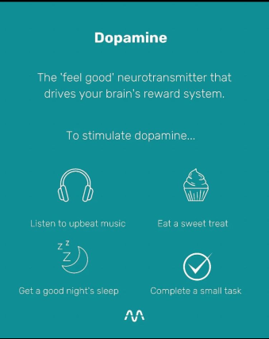

It's totally possible to learn how to change your life and live your dreams – it might not feel like it could be that way, but it's true. If you look around, there is always someone in the world who grew up in a similar place, time, and situation as you, who managed to change their life for the better. But just because it's possible to change your life doesn't mean it's easy. I've made considerable changes in my life more times than I can count. And whether I was changing my perspective, career, or the country I lived in, I learned one thing over and over again: To truly change my life I first needed to change myself.
- Decide to change Your life
- Changing your life may be the most challenging and uncomfortable thing you ever do. In other words, changing your life means making some tough decisions. So, how badly do you want to change your life? And what are you willing to do – and to give up – to make it happen? Once you decide to change your life come hell or high water, suddenly, almost anything is possible.
- Learn to Embrace Discomfort
-
If you want to learn how to change your life completely, be prepared to say goodbye to your comfort zone. The very essence of growth is to move beyond what you've experienced before.
You have to break new ground.
Billy Cox, Jimi Hendrix's bass guitarist, once said,"Life will only change when you become more committed to your dreams than you are to your comfort zone."
Some of the point that I consider Important are:
- Don’t order the same food twice
- Listen to different genres of music
- Watch eye-opening documentaries
- Sign up for a fitness challenge
- Take a different route home
- Text someone you haven't spoken to in years
- Identify Why You Want to Change Your Life
- When working out how to change your life, it’s often easier to start by determining what you don't want before exploring what you do want.
So, write down the aspects of your life that you don't like. - Define the Changes You Want to Make
Now it's time to get creative: How do you want to transform your life? Perhaps you'd like to:
- Start a business
- Move to a new location
- Change careers
- Go traveling
- Make new friends
- Take up a new hobby
- Let go of the past
- Stop procrastinating
- Grow your confidence
Don't listen to that voice. That voice is afraid of change. Anything is possible. Take it from Madonna who once said,
"No matter who you are, no matter what you did, no matter where you've come from, you can always change, become a better version of yourself."
Small things which are very easy and matters alot:

Dopamine is a type of neurotransmitter and hormone. It plays a role in many important body functions, including movement, memory and pleasurable reward and motivation. High or low levels of dopamine are associated with several mental health and neurological diseases
Serotonin is a chemical that carries messages between nerve cells in the brain and throughout your body. Serotonin plays a key role in such body functions as mood, sleep, digestion, nausea, wound healing, bone health, blood clotting and sexual desire
Endorphins can also release stress and create a feeling of well-being. Endorphins are the body's natural painkillers. Endorphins are released by the hypothalamus and pituitary gland in response to pain or stress, this group of peptide hormones both relieves pain and creates a general feeling of well-being.

Oxytocin also acts as a chemical messenger in your brain and has an important role in many human behaviors and social interactions, including:
Sexual arousal.
Recognition.
Trust.
Romantic attachment.
Parent-infant bonding.